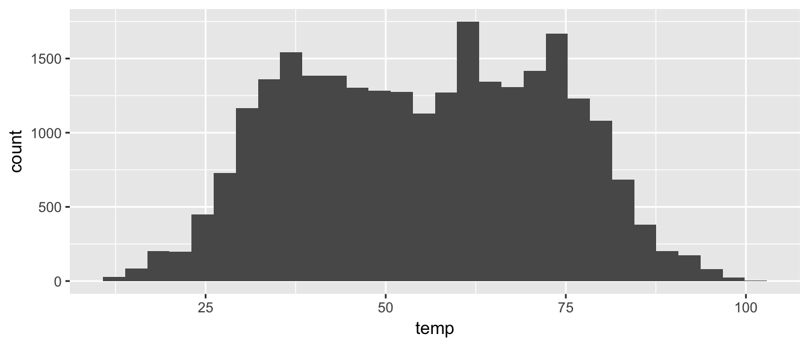

2 Sampling
In this chapter we kick off the third segment of this book, statistical inference, by learning about sampling. The concepts behind sampling form the basis of confidence intervals and hypothesis testing, which we’ll cover in Chapters ?? and ?? respectively. We will see that the tools that you learned in the data science segment of this book (data visualization, “tidy” data format, and data wrangling) will also play an important role here in the development of your understanding. As mentioned before, the concepts throughout this text all build into a culmination allowing you to “think with data.”
Needed packages
Let’s load all the packages needed for this chapter (this assumes you’ve already installed them). If needed, read Section ?? for information on how to install and load R packages.
library(dplyr)
library(ggplot2)
library(moderndive)
# For loading CSV files:
library(readr)2.1 Sampling bowl
Let’s start this chapter with a sampling exercise. Imagine you are given a large bowl with 2400 balls that are either red, white, or green. We are interested in the proportion of balls in this bowl that are red, but are too lazy to do an exhaustive count. You are also given a “shovel” that you can insert into this bowl…

Figure 2.1: A bowl with 2400 balls
… and extract a sample of \(n=50\) balls:

Figure 2.2: A shovel used to extract a sample of size n = 50
2.1.1 General sampling terminology
Before we proceed, let’s define some terminology:
- Population: The population is a set of \(N\) observations we are interested in.
- In our example, its the bowl of \(N=2400\) balls.
- Population parameter: A population parameter is a numerical summary measure about the population.
- In our example, it’s the true population proportion \(p\) of the balls in the bowl that are red.
- Census: An exhaustive enumeration/counting of all observations in the population used to compute the population parameter exactly, much like the Decennial United States census attempts to exhaustively count the US population.
- In our example, this would correspond to exhaustively counting all red balls of the \(N=2400\) total balls and computing \(p\) exactly.
- When \(N\) is small, a census is feasible. However, when \(N\) is large census can get very expensive, either in terms of time, energy, or money.
- Sampling: Collecting a subset of size \(n \leq N\) of observations from the population. Typically \(n\) is much smaller than \(N\).
- In our example, this corresponds to using the shovel to extract a sample of \(n=50\) balls.
- Representative sampling: A sample is said be a representative sample if it “looks like the population”.
- In other words, the characteristics of sample’s observations are a good representation of the characteristics of the population’s observations.
- In our example, this means does our sample of \(n=50\) balls “look like” the contents of the bowl?
- Point estimates/sample statistics: A summary statistic based on the sample of size \(n\) that estimates the population parameter.
- In our example, it’s the sample proportion \(\widehat{p}\) of the balls in the sample of \(n=50\) balls that are red.
- Key: The sample proportion \(\widehat{p}\) is an estimate of the population proportion \(p\).
- Generalizability: We say a sample is generalizable if any results of based on the sample can generalize to the population.
- In our example, is \(\widehat{p}\) a “good guess” of \(p\)?
- In other words, can we infer about the population based on our sample?
- Bias: In a statistical sense, we say bias occurs if certain observations of a population have a higher chance of being sampled than others. We say a sampling procedure is unbiased if every observation in a population had an equal chance of being sample.d
- In our example, did each ball, irrespective of color, have an equal chance of being sampled?
- Random sampling: We say a sampling procedure is random if we sample randomly from the population in an unbiased fashion.
The moral:
- If the sampling of a sample of size \(n\) is done at random then
- The sample is unbiased and representative of the population thus
- Any result based on the sample can generalize to the population thus
- The point estimate/sample statistic is a “good guess” of the population parameter
So in our example:
- If we properly mix the balls i.e. stir the bowl first before using the shovel to extract a sample of size \(n=50\)
- The contents of the shovel will “look like” the contents of the bowl thus
- Any results based on the \(n=50\) balls in the shovel can generalize to the \(N=2400\) balls in the bowl thus
- The sample proportion \(\widehat{p}\) of the \(n=50\) balls in the shovel that are red is a “good guess” of the true population proportion \(p\) of the \(N=2400\) balls that are red.
2.2 Tactile sampling from bowl
2.2.1 Tactilely using shovel once
Let’s now put our sampling shovel into action in the following tactile sampling exercise. Tactile just means physically tangible and perceptible by touch.
- Step 1 in Figure 2.3: Use the shovel to take a sample of size \(n=50\) balls from the bowl
- Step 2 in Figure 2.4: Pour them into a Red Solo Cup and
- Count the number that are red then
- Compute the sample proportion \(\widehat{p}\) of the \(n=50\) balls that are red.
- Step 3 in Figure 2.5: Mark the sample proportion \(\widehat{p}\) in a hand-drawn histogram.

Figure 2.3: Step 1: Take sample of size \(n=50\)

Figure 2.4: Step 2: Pour into Red Solo Cup and compute \(\widehat{p}\)

Figure 2.5: Step 3: Mark \(\widehat{p}\)’s in histogram
So for example in Figure 2.3 there are 18 balls out of \(n=50\) that are red. The sample proportion red for this particular sample is thus \(\widehat{p} = \frac{18}{50} = 0.36\). Our intrepid students then marked this value in the hand-drawn histogram in Figure 2.5. After 10 groups of students completed this exercise, the resulting hand-drawn histogram is in Figure 2.6 below. Observe:
- Five of the sample proportions \(\widehat{p}\) (based on five different samples of size \(n=50\)) were in the histogram bin \([0.30, 0.35)\). In other words, sample proportions of \(\widehat{p} = 0.30\) would be included in this bin, but sample proportions of \(\widehat{p} = 0.35\) would be included in the next bin to the right.
- The lowest value of \(\widehat{p}\) was somewhere between 0.20 and 0.25
- The highest value of \(\widehat{p}\) was somewhere between 0.45 and 0.50.

Figure 2.6: Step 3: Histogram of 10 values of \(\widehat{p}\)
2.2.2 Tactilely using shovel 33 times
All told, 33 groups tooks samples: in other words the shovel was used 33 times and 33 values of the sample proportion \(\widehat{p}\) were computed. Let’s import this data for all 33 groups and save it in a data frame called tactile_prop_red in Table 2.1. Notice how the replicate column enumerates each of the 33 groups, red_balls is the count of balls in the sample of size \(n=50\) that we red, and prop_red is the sample proportion \(\widehat{p}\) that are red.
library(readr)
tactile_prop_red <- read_csv("https://rudeboybert.github.io/STAT135/static/sampling_red_balls.csv")
View(tactile_prop_red)| group | replicate | red_balls | prop_red |
|---|---|---|---|
| Ilyas, Yohan | 1 | 21 | 0.42 |
| Morgan, Terrance | 2 | 17 | 0.34 |
| Martin, Thomas | 3 | 21 | 0.42 |
| Clark, Frank | 4 | 21 | 0.42 |
| Riddhi, Karina | 5 | 18 | 0.36 |
| Andrew, Tyler | 6 | 19 | 0.38 |
| Julia | 7 | 19 | 0.38 |
| Rachel, Lauren | 8 | 11 | 0.22 |
| Daniel, Caroline | 9 | 15 | 0.30 |
| Josh, Maeve | 10 | 17 | 0.34 |
| Emily, Emily | 11 | 16 | 0.32 |
| Conrad, Emily | 12 | 18 | 0.36 |
| Oliver, Erik | 13 | 17 | 0.34 |
| Isabel, Nam | 14 | 21 | 0.42 |
| Maya, Claire | 15 | 15 | 0.30 |
| Cindy, Kimberly | 16 | 20 | 0.40 |
| Kevin, James | 17 | 11 | 0.22 |
| Nam, Isabelle | 18 | 21 | 0.42 |
| Harry, Yuko | 19 | 15 | 0.30 |
| Yuki, Eileen | 20 | 16 | 0.32 |
| Ramses | 21 | 23 | 0.46 |
| Joshua, Elizabeth, Stanley | 22 | 15 | 0.30 |
| Siobhan, Jane | 23 | 18 | 0.36 |
| Jack, Will | 24 | 16 | 0.32 |
| Caroline, Katie | 25 | 21 | 0.42 |
| Griffin, Nicholas | 26 | 18 | 0.36 |
| Kaitlin, Jordan | 27 | 17 | 0.34 |
| Ella, Garrett | 28 | 18 | 0.36 |
| Julie, Hailin | 29 | 15 | 0.30 |
| Katie, Caroline | 30 | 21 | 0.42 |
| Mallory, Damani, Melissa | 31 | 21 | 0.42 |
| Katie | 32 | 16 | 0.32 |
| Francis, Vignesh | 33 | 19 | 0.38 |
2.2.3 Sampling distribution
Using your data visualization skills that you honed in Chapter ??, let’s visualize the distribution of these 33 sample proportions red \(\widehat{p}\) using a histogram with binwidth = 0.05. This visualization is appropriate since prop_red is a numerical variable.
ggplot(tactile_prop_red, aes(x = prop_red)) +
geom_histogram(binwidth = 0.05, color = "white") +
labs(x = "Sample proportion red based on n = 50",
title = "Histogram of 33 sample proportions based on 33 tactile samples of size n=50") 
Figure 2.7: Histogram of 33 sample proportions based on 33 tactile samples of size n=50
Let’s ask ourselves some questions:
- Where is the histogram centered?
- What is the spread of this histogram?
Recall from Section ?? the mean and the standard deviation are two summary statistics that would answer this question:
tactile_prop_red %>%
summarize(mean = mean(prop_red), sd = sd(prop_red))| mean | sd |
|---|---|
| 0.356 | 0.058 |
What you have just unpacked are some very deep and very subtle concepts in statistical inference:
- The histogram in Figure 2.7 is called the sampling distribution of \(\widehat{p}\) based on samples of size \(n=50\). It describes how values of the sample proportion red will vary from sample to sample due to sampling variability. It allows us to identify:
- Typical/common/plausible values of \(\widehat{p}\). Ex: \(\widehat{p} = 0.36\) would be such a value since it would in theory occur frequently.
- Atypical/rare/implausible values of \(\widehat{p}\). Ex: \(\widehat{p} = 0.8\) would be such a value since it lies far away from most of the distribution.
- If the sampling is done in an unbiased and random fashion, in other words we made sure to stir the bowl before we sampled, then the sampling distribution will be guaranteed to be centered at the true unknown population proportion red \(p\), or in other words the true number of balls out of 2400 that are red.
- The spread of this histogram, as quantified by the standard deviation of 0.058, is called the standard error. It quantifies the variability of our estimates for \(\widehat{p}\).
- Note: A large source of confusion. All standard errors are a form of standard deviation, but not all standard deviations are standard errors.
2.3 Virtual sampling from bowl
Now let’s mimic the above tactile sampling, but with virtual sampling. In other words:
- Instead of considering the tactile bowl shown in Figure 2.1 above and using a tactile shovel to draw samples of size \(n=50\)
- Let’s use a virtual bowl saved in a computer and use R’s random number generator as a virtual shovel to draw samples of size \(n=50\)
First, we describe our virtual bowl. In the moderndive package, we’ve included a data frame called bowl that has 2400 rows corresponding to the \(N=2400\) balls in the physical bowl. Run View(bowl) in RStudio to convince yourselves that bowl is indeed a virtual version of the tactile bowl in the previous section.
bowl# A tibble: 2,400 x 2
ball_ID color
<int> <chr>
1 1 white
2 2 white
3 3 white
4 4 red
5 5 white
6 6 white
7 7 red
8 8 white
9 9 red
10 10 white
# ... with 2,390 more rowsNote that the balls are not actually marked with numbers; the variable ball_ID is merely used as an identification variable for each row of bowl. Recall our previous discussion on identification variables in Subsection ?? in the “Data Tidying” Chapter ??.
Next, we describe our virtual shovel: the rep_sample_n() function included in the moderndive package where rep_sample_n() indicates that we are taking repeated/replicated samples of size \(n\).
2.3.1 Virtually using shovel once
The rep_sample_n() function included in the moderndive package where rep_sample_n() indicates that we are taking repeated/replicated samples of size \(n\). Let’s perform the virtual analogue of tactilely inserting the shovel only once into the bowl and extracting a sample of size \(n=50\). In the table below we only show results about the first 10 sampled balls out of 50.
virtual_shovel <- bowl %>%
rep_sample_n(size = 50)
View(virtual_shovel)| replicate | ball_ID | color |
|---|---|---|
| 1 | 2079 | red |
| 1 | 1076 | white |
| 1 | 1691 | red |
| 1 | 1687 | red |
| 1 | 1434 | white |
| 1 | 954 | white |
| 1 | 483 | white |
| 1 | 1520 | white |
| 1 | 2060 | red |
| 1 | 1682 | white |
Looking at all 50 rows of virtual_shovel in the spreadsheet viewer that pops up after running View(virtual_shovel), the ball_ID variable seems to suggest that we do indeed have a random sample of \(n=50\) balls. However, what does the replicate variable indidate, where in this case it’s equal to 1 for all 50 rows? We’ll see in a minute. First let’s compute the both the number of balls red and the proportion red out of \(n=50\) using our dplyr data wrangling tools from Chapter ??:
virtual_shovel %>%
summarize(red = sum(color == "red")) %>%
mutate(prop_red = red / 50)| replicate | red | prop_red |
|---|---|---|
| 1 | 23 | 0.46 |
Why does this work? Because for every row where color == "red", the boolean TRUE is returned and R treats TRUE like the number 1. Equivalently, for every row where color is not equal to "red", the boolean FALSE is returned and R treats FALSE like the number 0. So summing the number of TRUE’s and FALSE’s is equivalent to summing 1’s and 0’s which counts the number of balls where color is red.
2.3.2 Virtually using shovel 33 times
Recall however in our tactile sampling exercise in Section 2.2 above that we had 33 groups of students take 33 samples of size \(n=50\) using the shovel 33 times and hence compute 33 separate values of the sample proportion red \(\widehat{p}\). In other words we repeated/replicated the sampling 33 times. We can achieve this by reusing the same rep_sample_n() function code above, but by adding the reps = 33 argument indicating we want to repeat this sampling 33 times:
virtual_samples <- bowl %>%
rep_sample_n(size = 50, reps = 33)
View(virtual_samples)virtual_samples has \(50 \times 33 = 1650\) rows, corresponding to 33 samples of size \(n=50\), or 33 draws from the shovel. We won’t display the contents of this data frame but leave it to you to View() this data frame. You’ll see that the first 50 rows have replicate equal to 1, then the next 50 rows have replicate equal to 2, and so on and so forth, up until the last 50 rows which have replicate equal to 33. The replicate variable denotes which of our 33 samples a particular ball is included in.
Now let’s compute the 33 corresponding values of the sample proportion \(\widehat{p}\) based on 33 different samples of size \(n=50\) by reusing the previous code, but remembering to group_by the replicate variable first since we want to compute the sample proportion for each of the 33 samples separately. Notice the similarity of this table with Table 2.1.
virtual_prop_red <- virtual_samples %>%
group_by(replicate) %>%
summarize(red = sum(color == "red")) %>%
mutate(prop_red = red / 50)
View(virtual_prop_red)| replicate | red | prop_red |
|---|---|---|
| 1 | 17 | 0.34 |
| 2 | 20 | 0.40 |
| 3 | 24 | 0.48 |
| 4 | 20 | 0.40 |
| 5 | 17 | 0.34 |
| 6 | 16 | 0.32 |
| 7 | 17 | 0.34 |
| 8 | 19 | 0.38 |
| 9 | 19 | 0.38 |
| 10 | 12 | 0.24 |
| 11 | 22 | 0.44 |
| 12 | 17 | 0.34 |
| 13 | 20 | 0.40 |
| 14 | 22 | 0.44 |
| 15 | 13 | 0.26 |
| 16 | 15 | 0.30 |
| 17 | 23 | 0.46 |
| 18 | 20 | 0.40 |
| 19 | 16 | 0.32 |
| 20 | 12 | 0.24 |
| 21 | 14 | 0.28 |
| 22 | 21 | 0.42 |
| 23 | 14 | 0.28 |
| 24 | 18 | 0.36 |
| 25 | 19 | 0.38 |
| 26 | 12 | 0.24 |
| 27 | 22 | 0.44 |
| 28 | 23 | 0.46 |
| 29 | 19 | 0.38 |
| 30 | 18 | 0.36 |
| 31 | 20 | 0.40 |
| 32 | 17 | 0.34 |
| 33 | 20 | 0.40 |
Just as we did before, let’s draw a histogram with binwidth = 0.05 of the 33 sample proportions \(\widehat{p}\)
ggplot(virtual_prop_red, aes(x = prop_red)) +
geom_histogram(binwidth = 0.05, color = "white") +
labs(x = "Sample proportion red based on n = 50",
title = "Histogram of 33 sample proportions based on 33 virtual samples of size n=50") 
Figure 2.8: Histogram of 33 sample proportions red based on 33 virtual samples of size n=50
Let’s now compare the:
- Tactile sampling-based sampling distribution from the previous section to the
- Virtual sampling-based sampling distribution from this section

We see that they are similar and center and spread, although not identical due to random variation.
2.3.3 Virtually using shovel 1000 times
In Figure 2.8, we can start seeing a pattern in the sampling distribution emerge. However, 33 values of the sample proportion \(\widehat{p}\) might not be enough to get a true sense of the distribution. Using 1000 values of \(\widehat{p}\) would definitely give a better sense. What are our two options for constructing the these histograms?
- Tactile sampling: Make the 33 groups of students take \(\frac{1000}{33} \approx 31\) samples of size \(n=50\) each, count the number of red balls for each of the 1000 tactile samples, and then compute the 1000 corresponding values of the sample proportion \(\widehat{p}\). However, this would be cruel and unusual as this would take hours!
- Virtual sampling: Computers are very good at automating repetitive tasks such as this one. This is the way to go!
First, generate 1000 samples of size \(n=50\)
virtual_samples <- bowl %>%
rep_sample_n(size = 50, reps = 1000)
View(virtual_samples)Then for each of these 1000 samples of size \(n=50\), compute the corresponding sample proportions
virtual_prop_red <- virtual_samples %>%
group_by(replicate) %>%
summarize(red = sum(color == "red")) %>%
mutate(prop_red = red / 50)
View(virtual_prop_red)Finally plot it
ggplot(virtual_prop_red, aes(x = prop_red)) +
geom_histogram(binwidth = 0.05, color = "white") +
labs(x = "Sample proportion red based on n = 50", title = "Histogram of 1000 sample proportions based on 1000 virtual samples of size n=50") 
Learning check
(LC8.1) What is the standard error of the above sampling distribution of \(\widehat{p}\) based on 1000 samples of size \(n=50\)? Recall you are virtually micking the act of sampling with the following tactile shovel with \(n=50\) slots:

Figure 2.9: Tactile shovel for sampling n = 50 balls
(LC8.2) Change the sample size to \(n=25\)? What difference do you notice about the sampling distribution and the standard error? This corresponds to virtually micking the act of sampling with the following tactile shovel with \(n=25\) slots:

Figure 2.10: Tactile shovel for sampling n = 25 balls
(LC8.3) Change the sample size to \(n=100\)? What difference do you notice about the sampling distribution and the standard error? This corresponds to virtually micking the act of sampling with the following tactile shovel with \(n=100\) slots, which would take forever to actually do tactilely!

Figure 2.11: Tactile shovel for sampling n = 100 balls
2.3.4 Comparing sampling distributions
Based on the learning checks above, let’s now compare the sampling distribution of the sample proportion \(\widehat{p}\) based on 1000 virtual samples of size \(n=25\), \(n=50\), \(n=100\)
(LC8.1): Shovel with \(n=50\) slots
First, take 1000 virtual samples of size \(n=50\), mimicking the act of taking 1000 tactile samples using the shovel with \(n=50\) slots:
virtual_samples_50 <- bowl %>%
rep_sample_n(size = 50, reps = 1000)Then based on each of these 1000 virtual samples of size \(n=50\), compute the corresponding 1000 sample proportions \(\widehat{p}\) being sure to divide by 50:
virtual_prop_red_50 <- virtual_samples_50 %>%
group_by(replicate) %>%
summarize(red = sum(color == "red")) %>%
mutate(prop_red = red / 50)The standard error is the standard deviation of the 1000 sample proportions \(\widehat{p}\), in other words we are quantifying how much \(\widehat{p}\) varies from sample-to-sample based on samples of size \(n=50\) due to sampling variation.
virtual_prop_red_50 %>%
summarize(SE = sd(prop_red))# A tibble: 1 x 1
SE
<dbl>
1 0.0694(LC8.2): Shovel with \(n=25\) slots
First, take 1000 virtual samples of size \(n=25\), mimicking the act of taking 1000 tactile samples using the shovel with \(n=25\) slots:
virtual_samples_25 <- bowl %>%
rep_sample_n(size = 25, reps = 1000)Then based on each of these 1000 virtual samples of size \(n=50\), compute the corresponding 1000 sample proportions \(\widehat{p}\) being sure to divide by 50:
virtual_prop_red_25 <- virtual_samples_25 %>%
group_by(replicate) %>%
summarize(red = sum(color == "red")) %>%
mutate(prop_red = red / 25)The standard error is the standard deviation of the 1000 sample proportions \(\widehat{p}\), in other words we are quantifying how much \(\widehat{p}\) varies from sample-to-sample based on samples of size \(n=25\) due to sampling variation.
virtual_prop_red_25 %>%
summarize(SE = sd(prop_red))# A tibble: 1 x 1
SE
<dbl>
1 0.100(LC8.3): Shovel with \(n=100\) slots
First, take 1000 virtual samples of size \(n=100\), mimicking the act of taking 1000 tactile samples using the shovel with \(n=100\) slots:
virtual_samples_100 <- bowl %>%
rep_sample_n(size = 100, reps = 1000)Then based on each of these 1000 virtual samples of size \(n=100\), compute the corresponding 1000 sample proportions \(\widehat{p}\) being sure to divide by 100:
virtual_prop_red_100 <- virtual_samples_100 %>%
group_by(replicate) %>%
summarize(red = sum(color == "red")) %>%
mutate(prop_red = red / 100)The standard error is the standard deviation of the 1000 sample proportions \(\widehat{p}\), in other words we are quantifying how much \(\widehat{p}\) varies from sample-to-sample based on samples of size \(n=100\) due to sampling variation.
virtual_prop_red_100 %>%
summarize(SE = sd(prop_red))# A tibble: 1 x 1
SE
<dbl>
1 0.0457Put it together
Let’s compare the 3 standard errors…
| n | SE |
|---|---|
| 25 | 0.10 |
| 50 | 0.07 |
| 100 | 0.05 |
which are a numerical quantification of the spreads of the following three histograms of the sampling distribution of the sample proportion \(\widehat{p}\):

Figure 2.12: Comparing sampling distributions of p-hat for different sample sizes n
2.4 Central Limit Theorem
What you have just shown in the previous section is a very famous theorem, or mathematically proven truth, called the Central Limit Theorem. It loosely states that when samples means and sample proportions are based on larger and larger samples, the sampling distribution corresponding to these point estimates get
- More and more normal
- More and more narrow
Shuyi Chiou, Casey Dunn, and Pathikrit Bhattacharyya created the following 3m38s video explaining this crucial theorem to statistics using as examples, what else?
- The average weight of wild bunny rabbits!
- The average wing span of dragons!
2.5 Conclusion
2.5.1 What’s to come?
This chapter serves as an introduction to the theoretical underpinning of the statistical inference techniques that will be discussed in greater detail in Chapter ?? for confidence intervals and Chapter ?? for hypothesis testing.
2.5.2 Script of R code
An R script file of all R code used in this chapter is available here.
Chihara, Laura M., and Tim C. Hesterberg. 2011. Mathematical Statistics with Resampling and R. Hoboken, NJ: John Wiley; Sons. https://sites.google.com/site/chiharahesterberg/home.
Diez, David M, Christopher D Barr, and Mine Çetinkaya-Rundel. 2014. Introductory Statistics with Randomization and Simulation. First Edition. https://www.openintro.org/stat/textbook.php?stat_book=isrs.
Grolemund, Garrett, and Hadley Wickham. 2016. R for Data Science. http://r4ds.had.co.nz/.
Xie, Yihui. 2018. Bookdown: Authoring Books and Technical Documents with R Markdown. https://CRAN.R-project.org/package=bookdown.